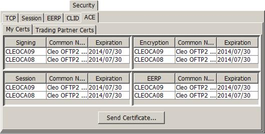
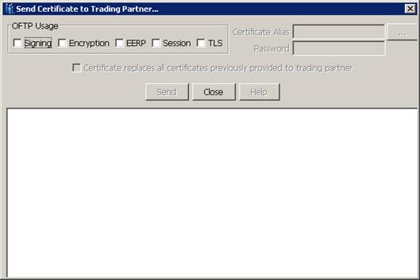
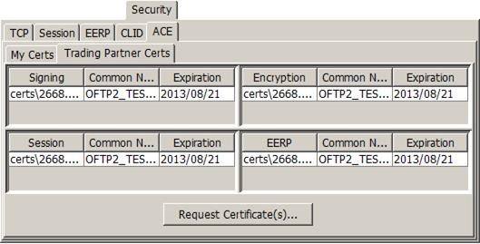
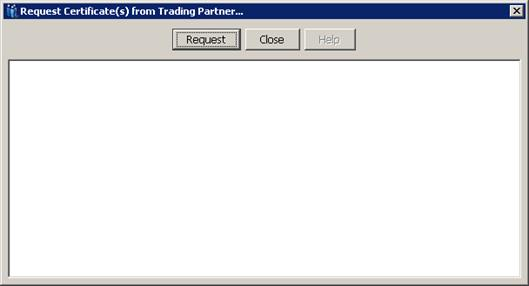

| OFTP Mailbox / OFTP Mailbox: Security Tab | |
Use the ACE (Automatic Certificate Exchange) tab to trade certificates with your partner through the same OFTP channel used to trade payload. ACE exchanges do not themselves use channel security features, which allows for exchange of initial certificates as well as replacement certificates. ACE is an extension to the OFTP2 specification. Check with your trading partner that their OFTP2 product supports ACE before attempting to use this tab. Your trading partner can also require that you provide your Certificate Logical Identification Data (CLID) values before using ACE.
The ACE tab shows certificates for both sides of the relationship – My Certs and Trading Partner Certs – and four different uses – Signing, Encryption, Session, and EERP. The currently active certificate is always listed first, followed by the other certificates that have been delivered through ACE.
Although they can also be exchanged through ACE, TLS certificates are not shown because in general all trusted certificates are accepted for TLS rather than a specific list. If the mailbox is a substation mailbox, session certificates are also not shown because the session certificate is only applicable to the main station mailbox.

ClickSend Certificate to display the Send Certificate to Trading Partner dialog box.

Select the intended usages and then fill in the user certificate alias and password. Click Send to initiate an ACE ODETTE_CERTIFICATE_DELIVER. If your trading partner responds with an EERP, the certificate becomes the active certificate for the selected usages and what was the active certificate is dropped down in the list.
If Certificate replaces all certificates previously provided to trading partner is selected first, then clicking Send initiates an ACE ODETTE_CERTIFICATE_REPLACE. If your trading partner responds with an EERP, the certificate becomes the active certificate for the selected usages, and all of the user certificates previously listed are automatically cleared.
To manually remove a certificate in the list (other than the active certificate), right-click on the certificate and select Remove.

The following dialog is shown when Request Certificate(s) is clicked:

Click Request to initiate an ACE , and if acceptable, queue your trading partner to send one or more ACE ODETTE_CERTIFICATE_DELIVERs back. An ODETTE_CERTIFICATE_DELIVER can also be received unsolicited. Based on your configured CLID, the usage for the certificate within the DELIVER is determined, the certificate becomes the active certificate for its usages, and what was the active certificate is dropped down in the list.
To manually remove a certificate in the list (other than the active certificate), right-click on the certificate and select Remove.